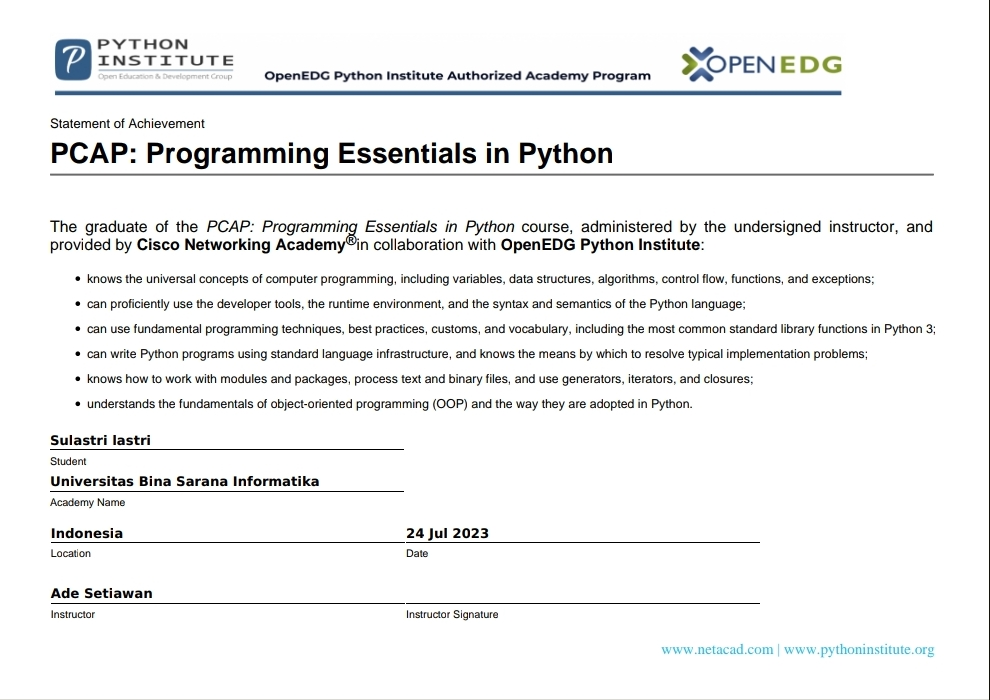

HI! I'M SULASTRI
TECH ENTHUSIAST
Mahasiswa aktif Program Studi Teknik Informatika Universitas Bina Sarana Informatika dengan pengalaman akademik dalam pengembangan aplikasi berbasis web, desain UI/UX. Memiliki keahlian dalam HTML, CSS, Laravel, Python, dan SQL, serta terbiasa menggunakan Figma dan Canva untuk desain antarmuka berbasis pendekatan Design Thinking. Terlatih dalam penyusunan dokumentasi teknis, memahami jaringan dasar (LAN, Mikrotik, Cisco), dan terbiasa bekerja dalam tim proyek teknologi.
Volunteer
Dedikasi Project
Feb 2024 - Jun 2025Program Coordinator & Master of Ceremony (MC)
- Menyusun rundown acara sosial anak yatim untuk >60 peserta dan mengelola 5 segmen acara.
- Memimpin koordinasi dengan 10 anggota tim untuk memastikan kelancaran teknis dan alur acara.
- Mengembangkan kemampuan komunikasi, perencanaan, dan penyelesaian masalah secara real-time.
- Soft skill ini mendukung efektivitas kerja dalam koordinasi teknis dan user support di lingkungan IT.
Generasi Literasi – Indorelawan
Jun 2024 - Aug 2024Design Promotion Team
- Berkontribusi dalam tim desain kampanye digital untuk proyek literasi.
- Mendukung penyampaian pesan melalui visual yang informatif dan konsisten.
- Meningkatkan ketelitian terhadap detail, kemampuan kerja tim, dan komunikasi lintas fungsi.
- Mengasah soft skill yang bermanfaat dalam dokumentasi IT dan layanan pengguna (user support).
PROJECTS
Here are some of my projects. Click on images to view them.
CERTIFICATES
Here are some of my professional certifications and achievements.
MikroTik Certified Network Associate
IT Bootcamp

PCAP-Programming Essentials In Python
DataBase System Proficiency Test
DataBase System Proficiency Test
Dedikasi Project
GET IN TOUCH
Feel free to reach out for collaborations or just to say hi!